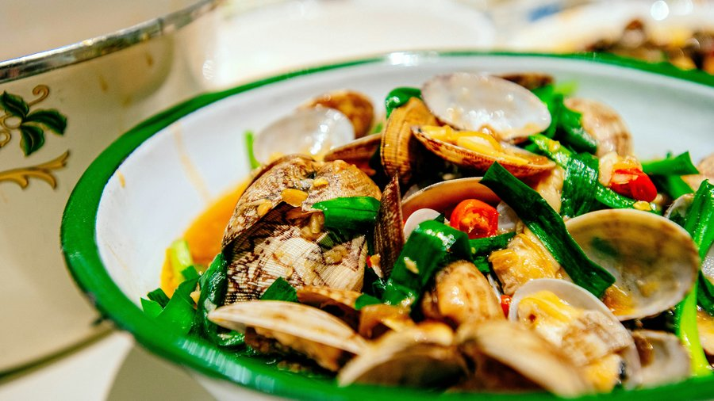

青島(チンタオ)は観光地であると同時に、日系企業が数多く進出しているビジネス都市でもあります。2009年には日本国駐青島総領事館が開設されており、山東省全域を管轄するほど、この地域には日本人の存在があります。特に黄島区には日系工場が集中しており、出張で訪れる方も少なくないでしょう。この記事では、地元の味を楽しみたい方にも、日本食で一息つきたい方にも役立つよう、青島のグルメ情報をまとめました。
青島の地元グルメ:日本人にも食べやすいものから
山東料理は、四川料理や湖南料理のような強い辛さが少なく、海鮮中心の味付けも比較的シンプルなため、中華料理の中では日本人にとって挑戦しやすいジャンルといえます。

- 辣炒蛤蜊(ラーチャオガーリー):青島で「天下第一鮮」とも呼ばれるアサリの辛味炒め。まず試してほしい一皿です
- 鮁魚水餃(バーユイシュイジャオ):サワラのすり身を使った水餃子。青島ならではの海鮮餃子です
- 崂山菇炖鶏(ラオシャングードゥンジー):地元のキノコと鶏肉を煮込んだ、優しい味わいの家庭料理
- 海菜凉粉(ハイツァイリャンフェン):海藻を使った青島独自の冷菜。さっぱりとした口当たり
青島といえばビールも欠かせません。夏場は量り売りの生ビールをビニール袋に入れて持ち歩く光景が街中で見られ、これも青島らしい文化のひとつです。地元の路地裏の小さな炒め物専門店であれば、生ビール数杯を含めても一人あたり40元前後(約900円)で満足できることも多く、コストパフォーマンスの高さも魅力です。
知っておくと安心な注文のコツ
そのほか、「不要太辣(ブーヤオタイラー=辛くしないで)」「少放盐(シャオファンイエン=塩を控えめに)」なども、味付けを調整したいときに使えるフレーズです。
地元の食堂街を覗いてみる
劈柴院(ピーチャイユエン)は青島最古の食街として知られ、海鮮や麺類、スイーツの屋台が並びます。屋台メインで、目安は一人あたり30〜60元程度(約700〜1,400円)。ただし現在、一部エリアは改修工事中で、以前ほどの活気が感じられないとの声もあるようです。訪れる際は、営業中のエリアを確認しながら回るとよいでしょう。
上級者向け:自分で買った海鮮を加工してもらう「来料加工」
青島には「来料加工(ライリャオジャーコン)」と呼ばれる、地元で愛されている食べ方があります。市場で自分で海鮮を買い、近くの店(多くは「啤酒屋(ビール屋)」と呼ばれる小さな食堂)に持ち込んで、加工費だけを払って調理してもらうスタイルです。店側は食材そのものには利益を乗せないため、レストランで直接注文するより大幅に安く、しかも自分で選んだ分だけ新鮮な海鮮を楽しめます。
目安として、一人あたり80〜120元程度(約1,800〜2,800円、市場での海鮮代+加工費込み)で満足できることが多いようです。実際の例として、カニ・エビ・アサリ類を購入し加工費を含めて一人126元程度(約2,900円)で楽しんだという報告もあります。生の量り売りビールも1杯(500ml程度)10〜15元(約230〜340円)と手頃で、瓶ビールよりも新鮮な味わいが楽しめる点も魅力です。
おすすめの市場は、団島農貿市場や営口路市場。特に営口路市場周辺は、啤酒屋が100軒以上密集しており、観光地(桟橋やビール街)周辺の加工店より価格が良心的だとされています。
日本人経営・本格日本食のお店
青島には、日本人が経営する飲食店や、本格的な日本料理を提供する店が複数あります。訪問目的に合わせて選んでみてください。
接待・特別な食事向け
崂山区にある高級日本料理店では、厚切りの刺身や寿司、天婦羅などが楽しめ、個室も完備されているため、取引先との会食にも向いています。一人あたり450〜1300元程度(約1万〜3万円)からとされ、コース内容によって幅があります。予約が前提の店が多いため、事前連絡をおすすめします。
日本人経営の居酒屋・割烹
山前居酒屋割烹は、店長・料理長ともに日本人が務める小さな店として知られています。アットホームな雰囲気で、青島に住む日本人からも評判が良いようです。一人あたり150〜300元程度(約3,500〜6,900円)が目安です。
ショッピングモール・繁華街もチェック
連日同じような食事が続いて少し疲れたときや、待ち合わせ場所に迷ったときは、大型商業施設や繁華街を拠点にするのも一つの方法です。
- 青島万象城(香港中路):2015年開業、地下鉄駅直結でアクセスしやすい大型モール。中華・西洋・日韓料理まで揃い、船歌魚水餃や開海など地元の人気ブランドの支店も入っています。「青島料理に飽きたら、口直しに」という声が多く、迷ったときの安全な選択肢といえます(Google Mapsで見る)
- 香港中路商圈:青島で最もオフィスワーカーが集中するエリアで、中〜高級店が多く、接待・会食にも向いています。吉宗居酒屋の1号店もこのエリアにあります
- 台東歩行街・恣児街(ズーアルジエ):山東省唯一の国家級歩行者天国指定エリア。夜になると40店以上の屋台が並ぶ賑やかな雰囲気で、気軽に食べ歩きを楽しみたいときに向いています。ただし「全国どこにでもある屋台街と似ていて、青島ならではの特色は薄い」という地元の声もあり、過度な期待は禁物かもしれません(Google Mapsで見る)
夜、食事しながらほっとひと息つける店
吉宗(キッソウ)居酒屋は2009年に香港中路で1号店をオープンし、その後青島市内に複数の支店を展開してきた老舗居酒屋です。狭い路地の奥、階段を上った先にひっそりと灯る提灯が目印で、店内は木の温もりを感じる落ち着いた造り。スタッフの日本語対応もスムーズで、日本のドラマ「深夜食堂」を思わせる雰囲気だと評されることもあります。一人あたり100元前後(約2,300円)からが目安です。出張の合間に、一人でふらっと立ち寄るのにも向いている一軒です。
地元の雰囲気を味わいたい場合は、青島ビール街(登州路)もおすすめです。夏の夜は特ににぎわい、テーブルを外に並べて生ビールと海鮮を楽しむ人々で活気づきます。実際に訪れた人からは「友人とビールを飲むのにぴったりの通り」といった声もあり、気軽に地元の夜を体験できる場所です。すぐ近くには青島ビール博物館もあり、昼間の観光と組み合わせるのもよいでしょう。
郊外エリア(黄島区・李沧区・城陽区)のおすすめ
出張の場合、必ずしも市中心部に滞在するとは限りません。特に黄島区(西海岸新区)には日系工場が集中しており、こちらに滞在・訪問する方も多いはずです。エリアごとにおすすめを紹介します。
黄島区:老舗の 君如意海鮮食府 は、地元で長年愛されている海鮮料理店で、個室もあり接待にも向いています(Google Mapsで見る / 電話:+86-532-6682-6666)。カジュアルに楽しみたい場合は、金沙滩に近い 漁人碼頭 もおすすめで、価格も手頃です。
李沧区:高鉄駅(青島北駅)に近く、出張の合間に立ち寄りやすいエリアです。地元の人が「週に何度も通う」というほど人気の 李村夜市・楽客城夜市 は、屋台の食べ歩きを気軽に楽しめます(Google Mapsで見る)。ホテル内で安心して食事したい場合は、青島李沧グリーンタウン・シェラトンホテル内の日本料理店も選択肢になります(Google Mapsでホテルを見る / 電話:+86-532-8813-8888)。
城陽区:地元の焼肉・串焼きチェーン「那些年一起吃串的地方」の城陽万達店は、青島市内の焼肉ランキングで上位常連の人気店。空港からのアクセスも比較的良いエリアです。
なお、即墨区や莱西市は市街地からやや離れており、飲食店というよりは「即墨老酒(伝統的な黄酒)」や地元産の栗・鶏料理といった特産品で知られる地域です。時間に余裕がある場合の寄り道先として覚えておくとよいでしょう。
特別な一軒を探すなら:ミシュランシェフ店や海外グルメ
2024年、香港中路の超高層ビル最上階に、青島初となるミシュラン星付きシェフが手がける 京潮荟 がオープンしました。地上242メートルからの眺望とともに、北京料理・潮州料理の技法を青島の海鮮に取り入れた創作料理が楽しめます。特別な日の会食にふさわしい一軒です。
市南区には、多国籍な飲食店も点在しています。イスラエル人オーナーによる本格リブ料理の店や、バイリンガル対応のアメリカンダイナー、韓国直送の調味料を使うチーズトッポギ専門店、老舗インド料理店など、青島の味に少し飽きたときの選択肢として覚えておくと便利です。
まとめ
青島は、海鮮を中心とした比較的マイルドな地元グルメと、本格的な日本食の両方が楽しめる街です。出張で慌ただしい滞在でも、旅行でゆっくり過ごす場合でも、その日の気分に合わせて選択肢を持っておくと安心です。
この記事の内容に古い情報や誤りを見つけた場合、あるいはご感想・ご質問がありましたら、お問い合わせまでお気軽にご連絡ください。